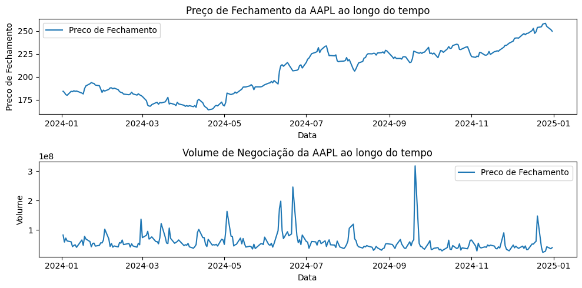
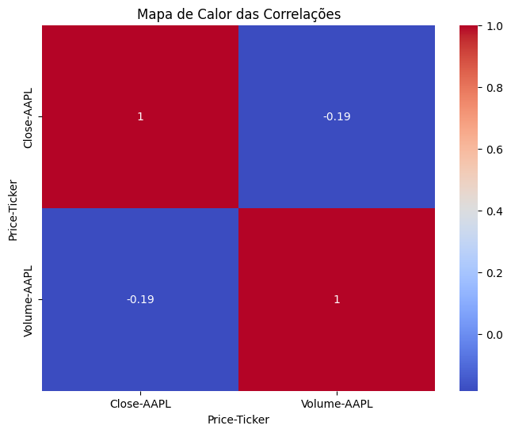

Mentoria DATAUP - Aula02#
Análise Exploratória de Dados Financeiros com yfinance#
Instalação do Pacote yfinance#
#instale o pacote yfinance
import yfinance as yf
Importação de Bibliotecas#
#Implemente a importação das bibliotecas necessárias: 'pandas', 'matplotlib.pyplot' e 'seaborn'
import pandas as pd
import matplotlib.pyplot as plt
import seaborn as sns
Carregamento dos Dados#
Baixar dados históricos da Apple
#Baixe os dados históricos da Apple utilizando o pacote 'yfinance'. Defina o intervalo de datas de 2020-01-01 a 2023-01-01.
df = yf.download('AAPL', start='2024-01-01', end='2025-01-01')
YF.download() has changed argument auto_adjust default to True
[*********************100%***********************] 1 of 1 completed
Visualização Inicial dos Dados#
# Mostrar as primeiras linhas do dataframe
print(df.head())
Price Close High Low Open Volume
Ticker AAPL AAPL AAPL AAPL AAPL
Date
2024-01-02 184.290421 187.070068 182.553143 185.789438 82488700
2024-01-03 182.910538 184.528693 182.096492 182.880757 58414500
2024-01-04 180.587540 181.758954 179.565029 180.825785 71983600
2024-01-05 179.862823 181.431339 178.860172 180.666948 62303300
2024-01-08 184.210999 184.250716 180.180517 180.766224 59144500
# Mostrar informações gerais sobre o dataframe
print(df.info())
<class 'pandas.core.frame.DataFrame'>
DatetimeIndex: 252 entries, 2024-01-02 to 2024-12-31
Data columns (total 5 columns):
# Column Non-Null Count Dtype
--- ------ -------------- -----
0 (Close, AAPL) 252 non-null float64
1 (High, AAPL) 252 non-null float64
2 (Low, AAPL) 252 non-null float64
3 (Open, AAPL) 252 non-null float64
4 (Volume, AAPL) 252 non-null int64
dtypes: float64(4), int64(1)
memory usage: 11.8 KB
None
Tratamento de Dados#
# Verificar se há valores nulos
print(df.isnull().sum())
Price Ticker
Close AAPL 0
High AAPL 0
Low AAPL 0
Open AAPL 0
Volume AAPL 0
dtype: int64
# Remova linhas com valores nulos (se necessário)
df = df.dropna()
Análise Descritiva#
# Imprima as estatísticas descritivas(count, mean, std, min, etc) das colunas de interesse (ex: 'Close', 'Volume')
print(df['Close'].describe())
Ticker AAPL
count 252.000000
mean 206.272487
std 25.653530
min 164.009491
25% 183.011017
50% 213.267609
75% 226.600967
max 258.396667
print(df['Volume'].describe())
Ticker AAPL
count 2.520000e+02
mean 5.712725e+07
std 3.083294e+07
min 2.323470e+07
25% 4.174738e+07
50% 4.986030e+07
75% 6.279472e+07
max 3.186799e+08
Visualização de Dados#
# Crie gráficos para visualizar o preço de fechamento ao longo do tempo.
# Utilize 'matplotlib' para plotar os gráficos.
plt.figure(figsize=(10,5))
#Preço de Fechamento
plt.subplot(2,1,1)
plt.plot(df.index, df['Close'], label='Preco de Fechamento')
plt.xlabel('Data')
plt.ylabel('Preco de Fechamento')
plt.title('Preço de Fechamento da AAPL ao longo do tempo')
plt.legend()
#Volume de Negociação
plt.subplot(2,1,2)
plt.plot(df.index, df['Volume'], label='Preco de Fechamento')
plt.xlabel('Data')
plt.ylabel('Volume')
plt.title('Volume de Negociação da AAPL ao longo do tempo')
plt.legend()
plt.tight_layout()
plt.show()

Análise de Correlação#
#Calcule a correlação entre as variáveis 'Close' e 'Volume'.
correlacao = df[['Close', 'Volume']].corr()
print(correlacao)
Price Close Volume
Ticker AAPL AAPL
Price Ticker
Close AAPL 1.000000 -0.185148
Volume AAPL -0.185148 1.000000
#Utilize 'seaborn' para plotar um heatmap das correlações.
plt.figure(figsize=(8,6))
sns.heatmap(correlacao, annot=True, cmap="coolwarm")
plt.title('Mapa de Calor das Correlações')
plt.show()

Conclusão#
# Interprete os gráficos e os resultados obtidos. Questione sobre possíveis
# insights que podem ser extraídos dos dados e como esses insights podem ser
# úteis no contexto do mercado financeiro.